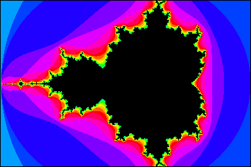

Now that you know the HTML class canvas, it is time to draw something even more beautiful than the circle from Basic Exercises 1.
In the middle of this page, you can see two canvases. The left one will be filled with a rendering of the so-called Mandelbrot set during subtasks a) to c). The right one will show
so-called Julia sets once you have implemented subtask d).
The Mandelbrot set (named after the Polish mathematician Benoit Mandelbrot) is the set of complex numbers \(c = Re(c) + i \cdot Im(c)\) for which the sequence \((z_n), n \in \mathbb{N}\) converges.
The sequence is given by the following formula:
\begin{align}
z_0 &= 0 \\
z_{n+1} &= f_c(z_n) = z_n^2 + c
\end{align}
The Julia sets (named after the french mathematician Gaston Julia) implemented in subtask d) are sets of complex numbers closely related to the mandelbrot set and also generated in a similar manner, using function \(f_c\).
Even though the above formula does not look like magic or art at the first sight, the pictures produced by its application (interpreting pixels of the two-dimensional plane as complex numbers) exhibit great beauty,
as you can see in the example pictures above. Your task will be to implement an interactive rendering tool for the Mandelbrot set (and, later on, for Julia sets) to explore its bizarre, yet gorgeous silhouette.
The simplest algorithm for visualization of the Mandelbrot set is the so-called Escape Time Algorithm, which uses a fixed amount of iterations to
decide whether the sequence converges (i.e., \(c\) is inside the Mandelbrot set) or diverges (i.e., \(c\) is not inside the Mandelbrot set). The pixels
corresponding to complex numbers inside the set are traditionally given black color, whereas the pixels corresponding to complex numbers not in the set
are shaded white (see left picture).
To produce such a picture, change function mandelbrotSet(). Some helper functions concerning complex numbers (mult, add,
sub, abs) are already given in section Complex Number Helpers, along with two constructors for complex numbers:
ComplexNumber() creates a new complex number with given real and imaginary part, ComplexNumberFromCoords() returns the
corresponding complex number for a pixel in the canvas, assuming that the canvas represents the region \([-2,1]\times[-1,1]\) in the complex plane. The latter
is already used in mandelbrotSet() to provide you with a usage example. Both constructors
have to be called using new. Implement functions f_c() and countIterations()
in section Magic Math and function getColorForIter() in section Colors and use them in mandelbrotSet() in section
Canvas Fillers to obtain the result of the leftmost picture.
Once you are able to correctly visualize the Mandelbrot set, it is time to render the exterior of the Mandelbrot set in a more informative (and also more beautiful)
way. Instead of using only the binary information about convergence/divergence for each pixel, one can easily adapt the coloration to represent how fast the
sequence is diverging for a given \(c\). In the Escape Time Algorithm, this is equivalent to shading the pixels according to the number of iterations needed to meet
the divergence condition. To do so, change function getColorForIter() according to the comments to support all four color schemes selectable from
the radio buttons (see pictures at the top of the page for reference). The changes should only affect the exterior of the set; make sure the interior is always shaded
black. For the rainbow color scheme, use HSV colors and implement conversion to RGB colors in function hsv2rgb().
|

Naive shading (banding effect)
|
Smooth shading
|
|
As you might have noticed, this kind of color picking results in ugly color bands. This effect gets even worse when you use the slider to reduce the number of
iterations used for the Escape Time Algorithm (see picture above, left side). An easy way to mitigate this banding effect is to use a fractional rather than an
integer iteration count. Take a look at this explanation and change your code in function
countIterations() accordingly.
So far, it is only possible to look at the whole set in the domain \([-2,1]\times[-1,1]\). To further investigate the fractal outline of the Mandelbrot set, you have
to define event listeners to enable zooming and moving the complex plane.
Three event listeners are involved in the moving process: onMouseDown(), onMouseMove() and onMouseUp() in section
Event Listeners. Use the three handlers to enable choosing a point and dragging it somewhere else. To enable zooming by turning the mouse wheel, you
only have to add the event listener onMouseWheel(), which is already given and zooms relatively to the center of the canvas.
Now the left canvas already shows the Mandelbrot set in all its glory, it is time to fill the right one with renderings of Julia sets. Unlike
in the case of the Mandelbrot set, there is not only one Julia set: You can find one for each complex function! In this assignment, you will restrict yourselves to Julia sets
emerging from the same function as the Mandelbrot set. This time, the set is formed by all complex numbers \(z\) for which the sequence \((z_n), n \in \mathbb{N}\)
converges for a fixed \(c\). To sum up, the choices of \(z\) and \(c\) are:
-
Mandelbrot set: \(z = 0\) fixed, \(c\) chosen as pixel on screen
-
Julia set: \(c\) fixed, \(z\) chosen as pixel on screen
 Using this knowledge, change function
Using this knowledge, change function juliaSet() in section Canvas Fillers to display the Julia set for the \(c\) stored in the global variable
juliaC. The functions needed to perform the rendering have already been implemented in the last assignment. The result should look like the picture on
the right (for 30 iterations and the rainbow color scheme).
Once this works, you can choose a new \(c\) by holding the CTRL key pressed and clicking on the Mandelbrot canvas. This way, you can explore the
relationship between the Mandelbrot set and this kind of Julia sets.